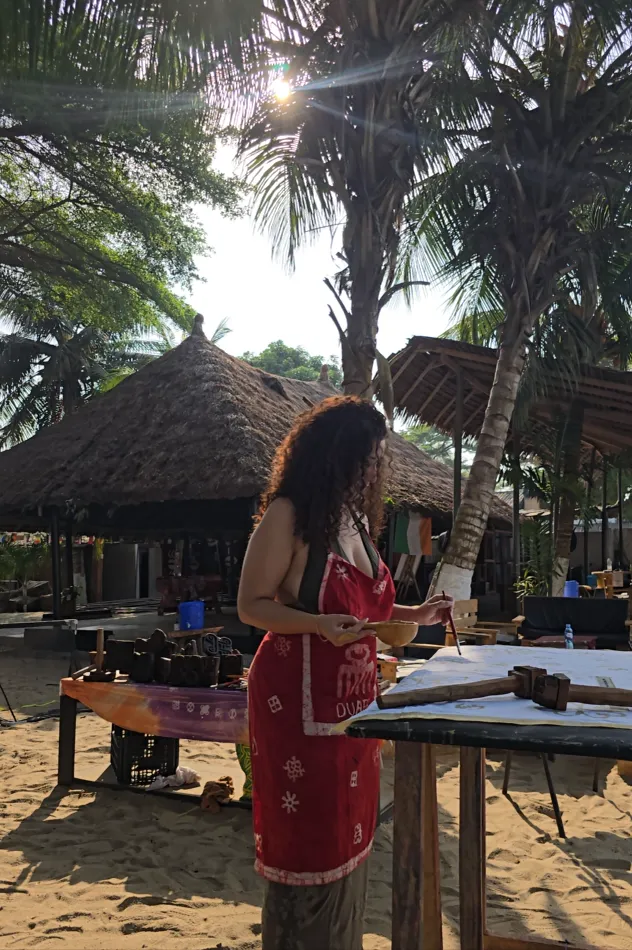

Qui est Mel Nourdi ?
Je m’appelle Mel. Je suis entrepreneure, et j’accompagne les indépendants pour qu’ils gagnent plus de clients et plus de temps. Voici comment j’en suis arrivée là.
Une enfant pleine d’idées
J’ai grandi en France, fait mes études entre la Suisse et la France, et beaucoup voyagé. J’ai toujours été très créative, avec plein d’idées en tête.
Et depuis toute petite, une envie : entreprendre, pour décider moi-même de ce que je fais de mon temps.

Cinq ans dans le recrutement
J’ai commencé très jeune. D’abord salariée, puis très vite à mon compte. J’y ai passé 5 ans.
Mes premières boutiques
Ma première : une boutique artisanale de bombes de bain personnalisables. Puis la cosmétique, et l’e-commerce.
La beauté, jusqu’en Afrique
J’ai toujours eu à cœur d’embellir les gens. Je me suis formée dans une niche de la beauté, et j’ai même ouvert un cabinet en Afrique. C’est une activité qui marche très bien pour moi.
Mon propre logiciel
Pour mes rendez-vous, j’ai testé les plateformes de réservation. J’ai très vite compris que ce n’était pas un système juste pour ma clientèle.
Alors j’ai créé mon propre logiciel. Mes clients réservent chez moi, et je ne dépends plus d’une plateforme.
En quelques repères
- 5 ansdans le recrutement
- 2 payspour mes études, la Suisse et la France
- 1 cabinetouvert en Afrique
- 5 prosont déjà pris leur place pour leur logiciel
Ce que je transmets
Je vois énormément d’indépendants galérer. Alors je t’accompagne pour optimiser ton business et le système que tu as déjà construit, et je crée les outils qui te simplifient la vie, que tu sois dans la beauté ou ailleurs.
« C’est la peur qui nous contrôle. Le jour où tu arrives à la tuer, tu peux tout faire. »
Et maintenant ?
Deux façons de commencer avec moi.